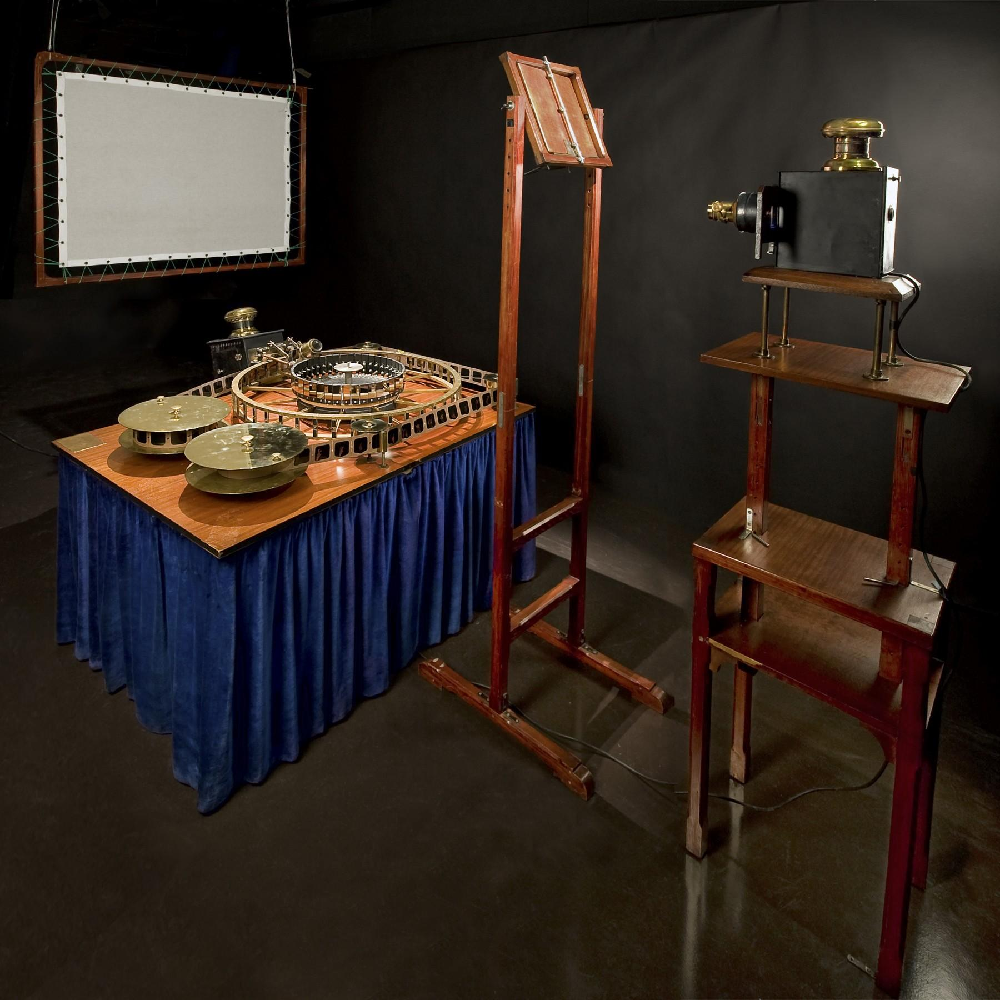
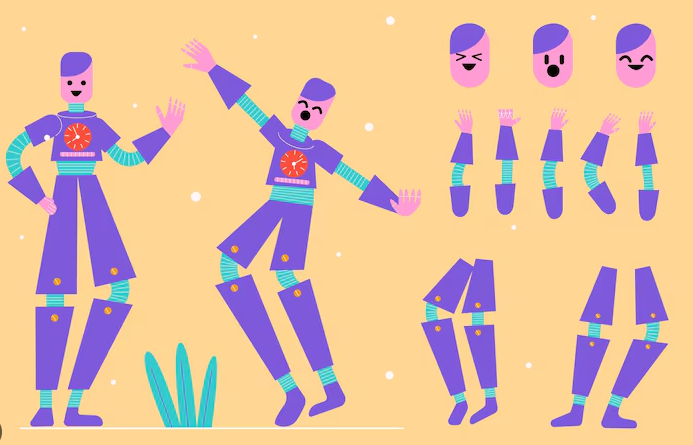
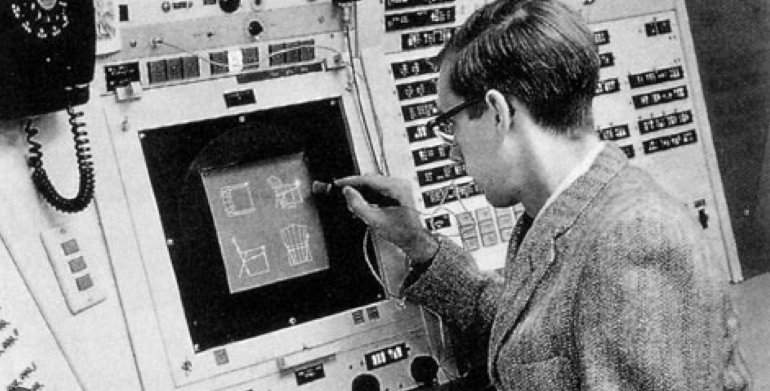
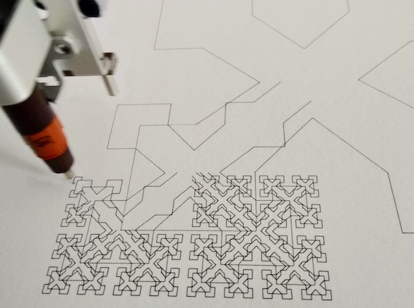
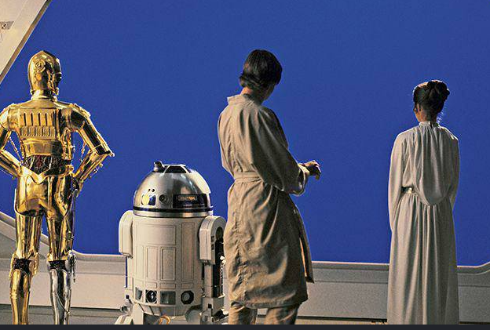

История анимации
Каждый день мы сталкиваемся с анимацией десятки, а иногда и сотни раз, даже не замечая этого. Мы открываем телефон, и иконки плавно реагируют на касание. Заказываем еду через приложение, где загрузка сопровождается небольшой анимацией. Смотрим рекламу в социальных сетях, заставки фильмов, видеоролики на YouTube, цифровые экраны в городе, интерактивные выставки или концерты с огромными LED-экранами.
Все эти совершенно разные примеры объединяет одно: движение используется как инструмент передачи информации. Именно этим занимается моушн-дизайн.
🔶 Моушн-дизайн (Motion Design, motion - движение, design - дизайн) - это создание графики, типографики и других визуальных элементов, которые оживают с помощью движения для передачи информации, эмоций или истории.
Моушн-дизайн невозможно назвать самостоятельным видом искусства. Скорее, это область, которая объединяет знания сразу из нескольких дисциплин. О концепции многосредовости мы будет говорить и с других дисциплинах, так что для нас важно это понимание. Во время работы над проектом моушн-дизайнер использует:
композицию из живописи;
цвет и типографику из графического дизайна;
драматургию из литературы;
монтаж из кинематографа;
звук из музыки;
принципы анимации;
современные цифровые технологии.
Именно поэтому хороший моушн-дизайнер постоянно изучает самые разные области. Все эти области мы будем охватывать в курсе. И не важно какой софт вы будете использовать. В своём курсе я делаю упор на After Effects потому что он позволят продемонстрировать все эти составляющие.
Зачем нам история?
На первый взгляд действительно кажется, что старые технологии давно остались в музеях. Но если внимательно посмотреть на современные проекты, становится понятно, что это совсем не так. Практически каждый способ создания движения, который был изобретён за последние двести лет, продолжает использоваться и сегодня.
- Покадровая анимация превратилась в цифровой frame-by-frame.
- Бумажная перекладка стала Puppet Tool в After Effects и современными системами риггинга.
- Ротоскопинг используется в композитинге, кино и даже современных AI-инструментах.
- Стоп-моушн по-прежнему снимают крупнейшие мировые студии.
- Трёхмерная анимация продолжает развивать идеи, появившиеся ещё в первых компьютерных исследованиях.
История анимации - это не история устаревших технологий. Это история появления новых способов создавать движения.
Каждый новый этап не отменял предыдущий, а лишь расширял набор инструментов Именно поэтому мы будем изучать историю не как последовательность дат и фамилий, а как эволюцию методов работы, многие из которых вы сами будете использовать уже во время этого курса. Перед тем как говорить об истории подробно, давайте посмотрим на пример.
Чтобы понять, почему сегодня существует столько способов создания движения, нужно вернуться почти на двести лет назад и посмотреть, с чего всё начиналось.
До кинематографа
Любая цифровая анимация, кино, видеоигры и даже LED-экраны состоят из отдельных неподвижных изображений, которые очень быстро сменяют друг друга. Движение возникает не внутри экрана, а в нашем восприятии. Чтобы понять, как появилась анимация, сначала нужно разобраться, почему человеческий мозг вообще способен видеть движение там, где его физически нет. На это влияют сразу несколько особенностей нашего зрения.
🔶 Персистенция зрения (Persistence of Vision) - это способность глаза на короткое время сохранять изображение после того, как оно исчезло.
Если быстро показать одно изображение, а затем сразу заменить его следующим, первое ещё на долю секунды «остаётся» в нашем восприятии. Благодаря этому последовательность отдельных кадров воспринимается как единое движение. Именно на этом принципе работают кино, телевидение и традиционная покадровая анимация.
Важно отметить, что современные исследования показывают: одной только персистенции зрения недостаточно, чтобы полностью объяснить иллюзию движения. Значительную роль играет работа мозга, который самостоятельно связывает отдельные изображения в непрерывное действие.
В начале XX века немецкий психолог Макс Вертгеймер обнаружил ещё один важный эффект.
🔶 Phi phenomenon (эффект кажущегося движения) - это особенность восприятия, при которой мозг воспринимает быстро сменяющиеся неподвижные изображения как одно непрерывное движение.
Самый простой пример можно увидеть на новогодней гирлянде или световой вывеске. Лампочки не двигаются, но если они загораются по очереди, нам кажется, что свет перемещается. Именно поэтому персонаж на экране выглядит живым, хотя на самом деле мы видим лишь последовательность отдельных кадров.
Волшебный фонарь
Одним из первых устройств, позволяющих показывать изображения большой аудитории, стал волшебный фонарь (Magic Lantern), появившийся в XVII веке. Он представлял собой проекционный аппарат, внутри которого находился источник света. Свет проходил через стеклянную пластину с нарисованным изображением и проецировал его на стену.
Само изображение ещё не двигалось, однако некоторые фонари позволяли использовать сразу несколько стеклянных пластин или перемещать их относительно друг друга. Благодаря этому можно было создавать простые анимационные эффекты: движение облаков, волн, призраков или человеческих фигур. Фактически это был первый шаг к появлению проекционных технологий, которыми мы пользуемся и сегодня.

Фенакистископ
1832 году бельгийский физик Жозеф Плато создаёт фенакистископ. На вращающемся диске располагалась последовательность рисунков, изображающих различные фазы движения. Если смотреть на диск через специальные прорези во время вращения, отдельные изображения объединялись в плавную анимацию. Впервые стало возможным увидеть полноценный циклический мультфильм. Главная идея фенакистископа используется и сегодня: движение возникает благодаря последовательности кадров.

Театр Рейно
Вместо короткой зацикленной анимации он использовал длинную гибкую ленту с сотнями рисунков, которые проецировались на большой экран. В 1892 году зрители увидели первые публичные показы небольших анимационных фильмов. Некоторые из них содержали от 300 до 700 кадров и длились несколько минут. Это произошло за несколько лет до первого публичного киносеанса братьев Люмьер.
Фактически именно Эмиль Рейно стал первым человеком, который начал показывать зрителям полноценные рисованные фильмы.

На первый взгляд может показаться, что все эти устройства давно остались в музеях. Но если посмотреть на принцип их работы, станет понятно, что он практически не изменился. Как и двести лет назад, современная анимация создаётся последовательностью отдельных кадров. Разница лишь в инструментах. Вместо вращающихся дисков и цилиндров мы используем компьютеры, графические планшеты и программы вроде After Effects, Blender или Toon Boom. Но фундаментальная идея остаётся той же: движение рождается не внутри изображения, а в восприятии зрителя.
Именно поэтому историю анимации можно рассматривать не как череду устаревших изобретений, а как постепенное открытие принципов, на которых до сих пор строится вся современная индустрия моушн-дизайна.
Покадровая анимация
Следующий важный этап развития связан с появлением художников, которые начинают осознанно создавать движение, рисуя его кадр за кадром. Именно так рождается покадровая рисованная анимация - метод, который используется уже более ста лет и до сих пор остаётся одним из основных способов создания движения.
🔶 Покадровая анимация (Frame-by-frame animation) - это способ создания анимации, при котором каждый кадр рисуется художником отдельно.
В отличие от современных методов, где программа может автоматически построить промежуточные положения объекта, здесь аниматор самостоятельно создаёт каждую фазу движения. Если персонаж делает один шаг, художнику приходится нарисовать все положения ног, рук, головы, одежды и даже изменение выражения лица. Именно поэтому покадровая анимация считается одной из самых трудоёмких техник.

Одним из первых авторов рисованной анимации считается американский художник Джеймс Стюарт Блэктон. В 1906 году он создаёт фильм «Humorous Phases of Funny Faces» («Комические фазы смешных лиц»). В этом фильме рисунки постепенно изменяются между отдельными фотографиями, создавая впечатление, что изображения оживают прямо на глазах зрителя.
Хотя часть фильма была снята методом стоп-моушн, именно здесь впервые появляется идея последовательного изменения рисунка для создания движения. В последующие десятилетия именно этот метод становится основой мировой анимации. Так были созданы практически все классические мультфильмы XX века. Несмотря на огромное количество технологий, принцип оставался неизменным: художник рисовал каждый кадр отдельно.
Может показаться, что после появления компьютеров этот способ исчез. На самом деле произошло совсем другое. Если раньше художник рисовал карандашом на бумаге, то сегодня он делает это на графическом планшете. Современные программы позволяют быстро переключаться между кадрами, просматривать предыдущие рисунки с помощью функции Onion Skin, автоматически сохранять проект и экспортировать готовое видео.
Но каждое положение персонажа художник по-прежнему рисует самостоятельно. Покадровая анимация требует значительно больше времени, чем многие современные способы анимации. Возникает закономерный вопрос: почему её продолжают использовать? Ответ заключается в творческой свободе. Поскольку художник самостоятельно рисует каждый кадр, он не ограничен законами физики, готовыми алгоритмами или возможностями программы.
Можно бесконечно менять форму объектов, нарушать перспективу, превращать один предмет в другой, экспериментировать с ритмом и пластикой движения. Именно поэтому покадровая анимация до сих пор остаётся самым выразительным способом создания движения и активно используется в авторском кино, музыкальных клипах, рекламе и экспериментальном моушн-дизайне.
Стоп-моушн
Но что произойдёт, если вместо рисунка взять настоящий объект? Например: игрушку, кусок пластилина, бумажную фигуру, куклу. Если немного изменить положение объекта, сфотографировать его, снова изменить положение и снова сделать фотографию, а затем быстро воспроизвести все фотографии подряд, объект начнёт двигаться. Так появляется стоп-моушн.
🔶 Стоп-моушн (Stop Motion) - это техника создания анимации, при которой реальные объекты постепенно перемещаются или изменяются, а каждое их положение фиксируется отдельным кадром.
Важно понимать: стоп-моушн - это не жанр и не конкретный визуальный стиль. Это принцип работы. Объект может быть любым. Можно анимировать пластилинового персонажа, бумажную фигуру, деревянную игрушку, человека, еду или даже неодушевлённый предмет. Главное условие одно: объект физически изменяет своё положение между кадрами.
Одним из первых режиссёров, использовавших покадровую съёмку, был Джеймс Стюарт Блэктон. В 1906 году он создаёт фильм «Комические фазы смешных лиц». В фильме использовались рисунки на доске, которые постепенно изменялись, а каждый этап фиксировался камерой.
На первый взгляд, стоп-моушн кажется очень медленным и трудоёмким способом создания анимации. Зачем двигать объект руками и фотографировать каждое изменение, если его можно просто создать в 3D? Но именно физическая природа стоп-моушна и делает его интересным.
У цифровой графики можно создать идеальную поверхность. У стоп-моушна всегда остаётся материальность. Пластилин немного деформируется. Бумага слегка изгибается. Кукла может иметь видимые швы. Свет может немного измениться. Движение может быть неидеальным. Именно эти особенности создают ощущение реального присутствия.
Перекладка
До этого мы рассмотрели два основных способа создания движения. В покадровой анимации художник изменяет рисунок. В стоп-моушне он изменяет физический объект. Но оба метода требуют большого количества отдельных кадров. Если персонаж поднимает руку, в покадровой анимации художнику приходится заново рисовать или изменять изображение персонажа. В стоп-моушне нужно физически переместить его руку и зафиксировать новое положение.
Постепенно появляется другая идея: А что, если разделить персонажа на части и двигать эти части независимо друг от друга? Так возникает новая для нас техника.
🔶 Перекладная анимация (Cut-out Animation) - это техника, при которой изображение или персонаж разделяется на отдельные элементы, которые затем перемещаются, вращаются и изменяются независимо друг от друга.
Одной из самых известных художниц, работавших с этим принципом, была Лотте Райнигер. Она создавала персонажей из отдельных деталей чёрной бумаги. Фигуры собирались из множества частей, которые можно было перемещать относительно друг друга. Голова могла поворачиваться. Руки могли сгибаться. Ноги могли менять положение. Каждая часть персонажа существовала отдельно, но вместе они создавали цельную фигуру. В 1926 году Райнигер создала полнометражный фильм «Приключения принца Ахмеда».
Постепенно идея разделения персонажа на отдельные части переходит в цифровую анимацию. Сначала появляются системы, в которых художник работает с отдельными графическими элементами. Затем появляются цифровые персонажи, состоящие из отдельных частей. А потом программы начинают автоматически рассчитывать движение связанных объектов. Система становится всё сложнее. Аниматору уже не нужно вручную двигать каждую часть тела. Он может создать полноценный риг.
🔶 Риггинг - это создание системы цифровых костей, контроллеров и связей, которая позволяет управлять персонажем.
Например, вместо того чтобы отдельно двигать каждую точку аниматор может взять один контроллер и переместить больше объектов.

Ротоскопинг
До этого момента мы говорили о способах создания движения с нуля. Художник либо рисовал каждый кадр самостоятельно, либо двигал реальные объекты, либо собирал персонажа из отдельных элементов.
Но возникает новая задача. Что делать, если нужно передать сложное движение человека максимально точно? Поэтому аниматоры начинают использовать уже существующее движение человека как основу для рисунка. Так появляется ротоскопинг.
🔶 Ротоскопинг (Rotoscoping) - это метод, при котором художник использует видеозапись как основу и покадрово обводит или отделяет объекты, чтобы создать анимацию или маску.
Главная идея метода очень проста: сначала появляется движение, потом художник его анализирует и переносит в анимацию.
История ротоскопинга начинается в 1915 году. Американский аниматор Макс Флейшер создаёт устройство под названием Rotoscope. Оно представляло собой проектор, который показывал каждый кадр снятой киноплёнки на стеклянную поверхность. Художник видел изображение актёра и мог покадрово обводить его. Так удалось добиться движения, которое выглядело гораздо естественнее, чем полностью нарисованная анимация.
Интересно, что первым «актёром» для ротоскопинга стал брат Макса Флейшера, Дейв, который исполнял различные трюки. Именно по его движениям был создан персонаж Клоун Коко (Koko the Clown). Сегодня эту технику очень легко представить. Мы берём исходное видео и просто перерисовываем на слоях выше.
Disney
К началу 1930-х годов анимация уже существовала несколько десятилетий. Художники умели рисовать движение, использовать стоп-моушн, перекладку и ротоскопинг. Однако у каждого аниматора были собственные представления о том, как должен двигаться персонаж. Не существовало единой системы, объясняющей, почему одно движение кажется естественным, а другое - искусственным.
Именно эту задачу решила студия Disney. Важно понимать, что главным достижением Disney было не изобретение нового стиля анимации. Студия впервые попыталась сформулировать универсальные закономерности движения, которые работают независимо от техники исполнения.
Эти принципы одинаково применимы к рисованной анимации, кукольной анимации, трёхмерной графике, интерфейсам приложений и даже робототехнике. Поэтому можно сказать, что Disney не придумал стиль. Disney описал язык, на котором говорит движение. Эти принципы мы рассмотрим в отдельной лекции потому что они требуют пристального внимания и детального разбора.
Но, конечно же нельзя сказать, что не существует выразительного стиля этой студии. Всем нам он знаком. Но и сформулированные принципы оказались универсальными. Они не зависят от того, работает ли художник с карандашом, куклой, трёхмерной моделью или интерфейсом мобильного приложения. Именно поэтому мы продолжаем изучать их сегодня. Они лежат в основе практически любой качественной анимации, которую мы видим на экране, а в следующей лекции мы подробно разберём каждый из двенадцати принципов и научимся применять их в собственных проектах.
Компьютерная графика
К середине XX века большинство основных принципов анимации уже существовало. Художники умели рисовать покадровую анимацию, работать со стоп-моушном, использовать перекладку и ротоскопинг. Студия Disney сформулировала законы выразительного движения.
Но затем происходит событие, которое полностью меняет развитие всей индустрии. Появляется компьютер. Важно понимать, что компьютер не заменил существующие методы анимации. Он стал новым инструментом, который позволил автоматизировать уже известные процессы и открыть совершенно новые возможности. При этом развитие компьютерной графики происходило сразу в нескольких направлениях. Сегодня, открывая After Effects, Blender или другие подобные программы мы фактически пользуемся результатами исследований сразу нескольких независимых научных школ.
История современной компьютерной графики начинается в 1963 году, когда американский учёный Айвен Сазерленд создаёт программу Sketchpad. Это была первая система, позволявшая рисовать непосредственно на экране с помощью светового пера.

Сегодня интерфейс Sketchpad выглядит очень просто. Но именно здесь впервые появляются идеи, которые сегодня кажутся совершенно привычными: работа с объектами; масштабирование; копирование; привязки; группы; редактирование векторных линий; повторное использование элементов. Фактически Sketchpad стал прародителем практически всех современных графических редакторов.
Генеративный дизайн
Параллельно развивается совершенно другое направление. Некоторые художники начинают задаваться вопросом:
А может ли компьютер сам создавать изображение?
Так рождается генеративное искусство. Вместо того чтобы рисовать каждую линию вручную, художник начинает писать алгоритм, который создаёт изображение автоматически. Одними из первых произведений такого рода становятся работы, созданные с помощью плоттеров - устройств, которые рисовали изображение настоящим пером на бумаге.

Эффекты
Одновременно развивается ещё одно направление. Если предыдущие исследования были посвящены созданию изображений, то здесь задача другая. Как объединить несколько разных изображений в один кадр? Первые решения появляются ещё задолго до компьютеров. В кино начинают использовать Blue Screen, а позже Green Screen. Актёров снимают на однотонном фоне, который затем заменяют другим изображением.

Со временем этот процесс становится полностью цифровым. Когда мы добавляем текст поверх видео, объединяем несколько слоёв, используем маски или эффекты в After Effects, мы тоже занимаемся композитингом.
Компьютерная анимация
Ещё одно направление связано непосредственно с трёхмерной графикой. Первые исследования посвящены тому, как заставить компьютер создавать объёмные объекты и анимировать их. В 1970-1980-х годах в компании Lucasfilm начинает работать подразделение Computer Graphics Group. Именно оно позже станет студией Pixar. Здесь появляются первые короткометражные компьютерные мультфильмы, демонстрирующие возможности новой технологии.
А в 1995 году выходит «История игрушек» - первый полнометражный фильм, полностью созданный средствами компьютерной графики. Это становится настоящей революцией.
Каждое из этих направлений развивалось самостоятельно, решая собственные задачи. Но сегодня они снова объединяются в работе современного моушн-дизайнера. Именно поэтому специалисту важно понимать не только программы, но и идеи, лежащие в их основе. Illustrator, After Effects, Blender, TouchDesigner и Unreal Engine кажутся совершенно разными инструментами, однако все они являются продолжением исследований, начавшихся более полувека назад. Именно это и сделало компьютерную революцию не просто сменой технологий, а появлением новой визуальной культуры.